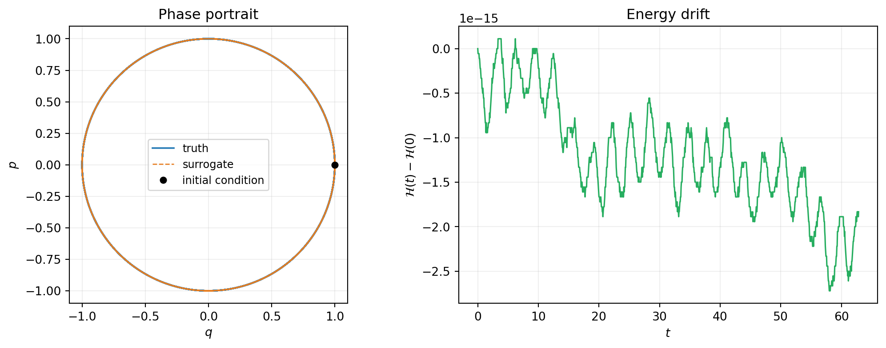
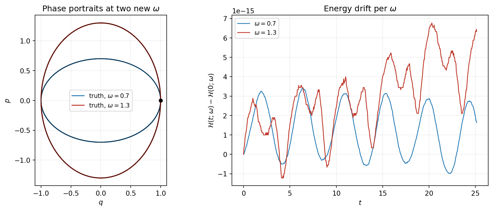
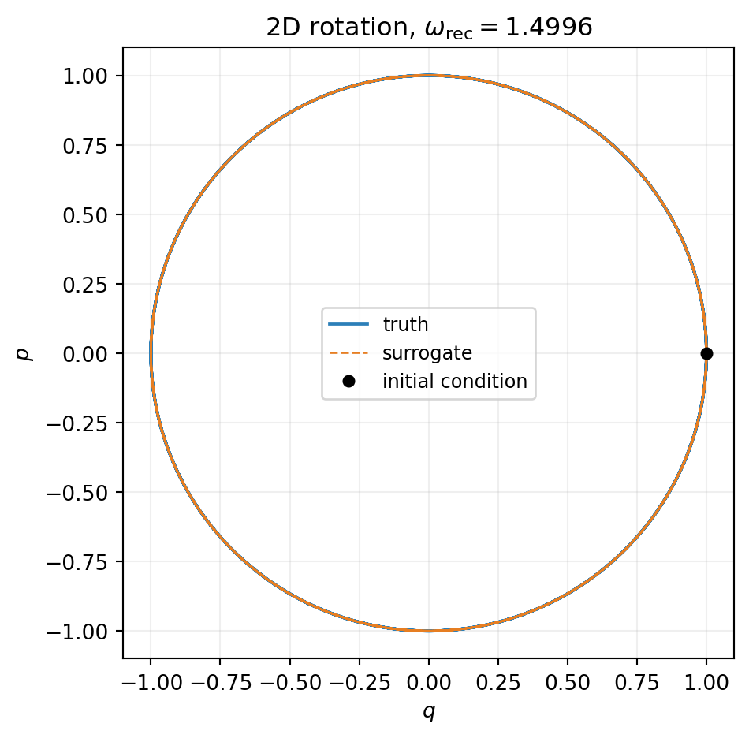
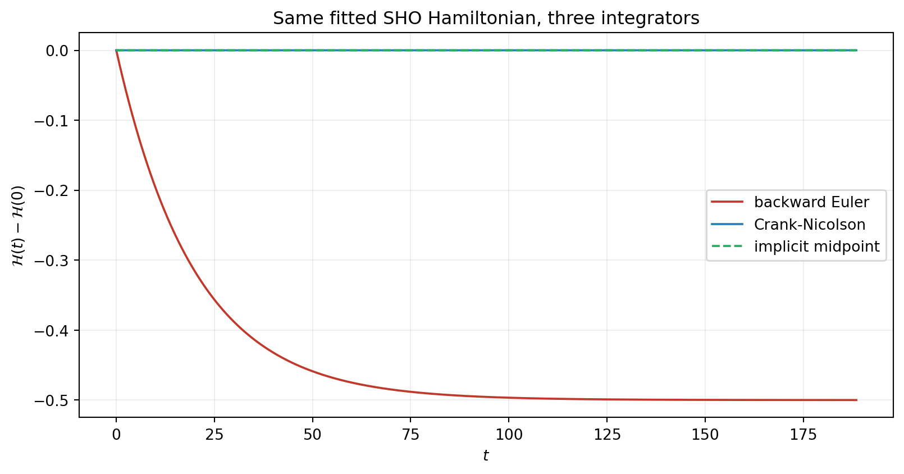

import numpy as np
import matplotlib.pyplot as plt
from scipy.integrate import solve_ivp
from pyapprox.util.backends.numpy import NumpyBkd
from pyapprox.probability import UniformMarginal
from pyapprox.surrogates.affine.basis import OrthonormalPolynomialBasis
from pyapprox.surrogates.affine.expansions import BasisExpansion
from pyapprox.surrogates.affine.indices import compute_hyperbolic_indices
from pyapprox.surrogates.affine.univariate import create_bases_1d
from pyapprox.surrogates.dynamical_systems import (
BatchedBoundODEResidual,
SnapshotDataset,
FixedPoissonVariableHamiltonianSurrogate,
FixedPoissonVariableHamiltonianDerivativeMatchingFitter,
VariablePoissonFixedHamiltonianSurrogate,
VariablePoissonFixedHamiltonianDerivativeMatchingFitter,
)
from pyapprox.ode.implicit_steppers.backward_euler import BackwardEulerAdjoint
from pyapprox.ode.implicit_steppers.crank_nicolson import CrankNicolsonAdjoint
from pyapprox.ode.implicit_steppers.implicit_midpoint import (
ImplicitMidpointAdjoint,
)
from pyapprox.ode.implicit_steppers.integrator import TimeIntegrator
from pyapprox.util.rootfinding.newton import NewtonSolver
bkd = NumpyBkd()Learning Hamiltonians
PyApprox Tutorial Library
Fit Hamiltonian surrogates that preserve energy by construction, using PyApprox’s two structure-preserving parametrisations, with diagnostic plots for energy drift under different integrators.
TipDownload Notebook
Learning Objectives
After completing this tutorial, you will be able to:
- Construct a
FixedPoissonVariableHamiltonianSurrogatefrom a scalarBasisExpansionand a skew-symmetric Poisson matrix - Fit the Hamiltonian coefficients \(\params\) with
FixedPoissonVariableHamiltonianDerivativeMatchingFitterand recover known coefficients exactly in the well-conditioned regime - Extend the workflow to a parametric Hamiltonian via the
n_paramsconstructor argument andmu_batchat prediction - Construct a
VariablePoissonFixedHamiltonianSurrogateby supplying gradient and Hessian callables for a known \(\mathcal{H}\), then fit the skew-matrix entries with the matching derivative-matching fitter - Diagnose energy conservation by integrating with backward Euler, Crank-Nicolson, and implicit midpoint and plotting \(\mathcal{H}(t)\)
- Recognise the constant basis term as a redundant degree of freedom and apply the standard workaround
Prerequisites
This tutorial extends Derivative Matching with the structure-preserving parametrisations introduced in Hamiltonian Systems and Structure-Preserving Surrogates. The parametric-Hamiltonian section in Part 1b uses the augmented-snapshot and mu_batch mechanics from Parametric Dynamical Systems.
Setup
The Hamiltonian surrogate classes and their fitters are exported from the same pyapprox.surrogates.dynamical_systems package used in earlier tutorials, alongside three implicit time-stepper classes:
Part 1a: Learning a Hamiltonian with Fixed Structure
The first parametrisation from the concept tutorial: \(\mt{L}\) is known (we use canonical \(\mt{J}\) for the simple harmonic oscillator) and the scalar Hamiltonian \(\mathcal{H}_\params\) is learned. We fit on the SHO with \(\omega = 1\):
\[ \dot q = p, \qquad \dot p = -q, \qquad \mathcal{H}(q, p) = \tfrac12 (q^2 + p^2). \tag{1}\]
Step 1: Build the Hamiltonian basis and surrogate
The Hamiltonian is a scalar function, so the underlying BasisExpansion has nqoi = 1. The constant basis term has zero gradient and contributes nothing to \(\mt{L} \nabla \mathcal{H}_\params\); including it would make the design matrix rank-deficient. The standard workaround is to drop the constant from the index set.
nvars = 2
max_level = 2 # SHO Hamiltonian is quadratic
marginals = [UniformMarginal(-3.0, 3.0, bkd) for _ in range(nvars)]
bases_1d = create_bases_1d(marginals, bkd)
all_indices = compute_hyperbolic_indices(nvars, max_level, 1.0, bkd)
indices = all_indices[:, 1:] # drop the constant column
basis = OrthonormalPolynomialBasis(bases_1d, bkd, indices)
hamiltonian_basis = BasisExpansion(basis, bkd, nqoi=1)
surrogate = FixedPoissonVariableHamiltonianSurrogate.canonical(
hamiltonian_basis,
)
print(f"Number of basis terms (constant dropped): "
f"{hamiltonian_basis.nterms()}")
print(f"Poisson matrix L = J:")
print(bkd.to_numpy(surrogate.poisson_matrix()))Number of basis terms (constant dropped): 5
Poisson matrix L = J:
[[ 0. 1.]
[-1. 0.]]The .canonical() factory builds \(\mt{J} = \begin{psmallmatrix} 0 & I \\ -I & 0 \end{psmallmatrix}\) of the right size automatically. To use a different skew matrix, pass it directly: FixedPoissonVariableHamiltonianSurrogate(hamiltonian_basis, L).
Step 2: Generate snapshots and fit
For demonstration we draw snapshots uniformly from a box in state space and compute the true derivatives analytically. In a real workflow the snapshots come from observed trajectories (as in Derivative Matching).
rng = np.random.RandomState(42)
n_snap = 500
q = rng.uniform(-2.0, 2.0, n_snap)
p = rng.uniform(-2.0, 2.0, n_snap)
states = bkd.array(np.stack([q, p], axis=0))
derivs = bkd.array(np.stack([p, -q], axis=0)) # SHO RHS with omega=1
dataset = SnapshotDataset(states, derivs, bkd)
fitter = FixedPoissonVariableHamiltonianDerivativeMatchingFitter(bkd)
result = fitter.fit(surrogate, dataset)
fitted_sho = result.surrogate()
residual = fitted_sho(dataset.states()) - dataset.derivatives()
rms_residual = float(bkd.sqrt(bkd.mean(residual ** 2)))
print(f"Training RMS residual: {rms_residual:.3e}")Training RMS residual: 1.197e-15A residual at the round-off floor confirms exact recovery of the underlying Hamiltonian up to representation in the chosen basis.
NoteWhat the fitter is doing
FixedPoissonVariableHamiltonianDerivativeMatchingFitter assembles the design matrix \(\Phi\) from the basis gradient — not the basis itself. For each snapshot the rows of \(\Phi\) are
\[ \Phi_{i,k} = \mt{L}\, \nabla \phi_k(\inputs_i), \]
where \(\phi_k\) is the \(k\)-th basis function. The surrogate RHS is \(\mt{L} \sum_k \params_k\, \nabla \phi_k(\inputs)\), which is linear in \(\params\), so the fit reduces to ordinary least squares \(\Phi\, \params = \dot{\inputs}\). This is why the constant basis term (which has zero gradient) creates a rank-deficient column and must be dropped — or absorbed by switching the fitter’s solver argument to a RidgeSolver, which adds Tikhonov regularisation.
Step 3: Integrate with Crank-Nicolson and validate
Wrap the fitted surrogate as an ODE residual, integrate over 10 oscillation periods, and compare to the analytic \((\cos t,\, -\sin t)\) trajectory.
wrapper = BatchedBoundODEResidual(learned_function=fitted_sho, n_dynamic=2)
stepper = CrankNicolsonAdjoint(wrapper)
newton = NewtonSolver(stepper)
newton.set_options(maxiters=30, atol=1e-12, rtol=1e-12)
integrator = TimeIntegrator(
init_time=0.0,
final_time=10 * 2 * np.pi,
deltat=0.05,
newton_solver=newton,
)
predicted, pred_times = integrator.solve(bkd.array([1.0, 0.0]))
# Analytic SHO truth
t_np = bkd.to_numpy(pred_times)
truth = bkd.array(np.stack([np.cos(t_np), -np.sin(t_np)], axis=0))
abs_err = bkd.max(bkd.abs(predicted - truth))
print(f"Max absolute error over 10 periods: {float(abs_err):.3e}")
# Energy along trajectory: H = 0.5*(q^2 + p^2)
H_traj = 0.5 * (predicted[0] ** 2 + predicted[1] ** 2)
drift = float(bkd.max(bkd.abs(H_traj - 0.5)))
print(f"Max |H(t) - H(0)| over 10 periods: {drift:.3e}")Max absolute error over 10 periods: 1.308e-02
Max |H(t) - H(0)| over 10 periods: 2.720e-15The energy drift is at round-off because Crank-Nicolson is symplectic for quadratic Hamiltonians (the SHO case, exactly).
pred_np = bkd.to_numpy(predicted)
truth_np = bkd.to_numpy(truth)
fig, axes = plt.subplots(1, 2, figsize=(11, 4.2))
axes[0].plot(truth_np[0], truth_np[1], lw=1.4, color="#2C7FB8", label="truth")
axes[0].plot(
pred_np[0], pred_np[1], "--", lw=1.0, color="#E67E22", label="surrogate",
)
axes[0].plot(1.0, 0.0, "ko", markersize=5, label="initial condition")
axes[0].set_xlabel(r"$q$")
axes[0].set_ylabel(r"$p$")
axes[0].set_title("Phase portrait")
axes[0].legend(fontsize=9)
axes[0].grid(True, alpha=0.2)
axes[0].set_aspect("equal", adjustable="box")
axes[1].plot(t_np, bkd.to_numpy(H_traj) - 0.5, lw=1.2, color="#27AE60")
axes[1].set_xlabel(r"$t$")
axes[1].set_ylabel(r"$\mathcal{H}(t) - \mathcal{H}(0)$")
axes[1].set_title("Energy drift")
axes[1].grid(True, alpha=0.2)
plt.tight_layout()
plt.show()
Part 1b: A Parametric Hamiltonian
Real systems usually have parameters. The Hamiltonian surrogate supports the parametric workflow via an n_params constructor argument and the mu_batch mechanism from Parametric Dynamical Systems. We illustrate by varying the SHO frequency: \(\mathcal{H}(q, p; \omega) =
\tfrac12 (p^2 + \omega^2 q^2)\).
Step 4: Build a parametric Hamiltonian surrogate
The Hamiltonian basis now operates on the augmented input \((q, p, \omega)\) — two state components plus the parameter. The total polynomial degree must be at least 4 because \(\omega^2 q^2\) has total degree 4:
nvars_aug = 3 # q, p, omega
max_level_aug = 4 # to span omega^2 * q^2
state_marginals = [UniformMarginal(-2.0, 2.0, bkd) for _ in range(2)]
omega_marginal = UniformMarginal(0.3, 2.2, bkd)
marginals_aug = state_marginals + [omega_marginal]
bases_1d_aug = create_bases_1d(marginals_aug, bkd)
all_indices_aug = compute_hyperbolic_indices(nvars_aug, max_level_aug, 1.0, bkd)
indices_aug = all_indices_aug[:, 1:] # drop constant
basis_aug = OrthonormalPolynomialBasis(bases_1d_aug, bkd, indices_aug)
hamiltonian_basis_aug = BasisExpansion(basis_aug, bkd, nqoi=1)
surrogate_par = FixedPoissonVariableHamiltonianSurrogate.canonical(
hamiltonian_basis_aug, n_params=1,
)
print(f"Augmented basis terms: {hamiltonian_basis_aug.nterms()}")
print(f"Surrogate nvars / nqoi / n_dynamic: "
f"{surrogate_par.nvars()} / {surrogate_par.nqoi()} / "
f"{surrogate_par.n_dynamic()}")Augmented basis terms: 34
Surrogate nvars / nqoi / n_dynamic: 3 / 2 / 2n_params=1 tells .canonical() that one of the three input rows is a system parameter, not dynamic state. The Poisson matrix is therefore \(2
\times 2\) canonical \(\mt{J}\), acting only on the dynamic rows.
Step 5: Generate augmented snapshots across multiple \(\omega\) values
Same pattern as the non-Hamiltonian parametric tutorial: augment each trajectory’s snapshot input with an \(\omega\) row, then concatenate.
omega_train = [0.5, 1.0, 1.5, 2.0]
rng = np.random.RandomState(7)
state_blocks, deriv_blocks = [], []
for omega in omega_train:
n = 200
q = rng.uniform(-1.5, 1.5, n)
p = rng.uniform(-1.5, 1.5, n)
omega_row = np.full((1, n), omega)
state_blocks.append(np.vstack([np.stack([q, p], axis=0), omega_row]))
# SHO derivatives at this omega: dq/dt = p, dp/dt = -omega^2 * q
deriv_blocks.append(np.stack([p, -omega ** 2 * q], axis=0))
aug_states = bkd.array(np.hstack(state_blocks))
aug_derivs = bkd.array(np.hstack(deriv_blocks))
dataset_par = SnapshotDataset(aug_states, aug_derivs, bkd)
print(f"Parametric snapshot set: {dataset_par.nsamples()} pairs "
f"({dataset_par.nstates_input()} input rows, "
f"{dataset_par.nstates_output()} output rows)")
fitter_par = FixedPoissonVariableHamiltonianDerivativeMatchingFitter(bkd)
result_par = fitter_par.fit(surrogate_par, dataset_par)
fitted_par = result_par.surrogate()
residual_par = fitted_par(dataset_par.states()) - dataset_par.derivatives()
rms_par = float(bkd.sqrt(bkd.mean(residual_par ** 2)))
print(f"Parametric training RMS residual: {rms_par:.3e}")Parametric snapshot set: 800 pairs (3 input rows, 2 output rows)
Parametric training RMS residual: 2.830e-15Step 6: Predict at new \(\omega\) values via mu_batch
The same BatchedBoundODEResidual interface works: pass an (n_params, k) array, integrate \(k\) trajectories simultaneously.
omega_test = [0.7, 1.3]
k = len(omega_test)
mu_batch = bkd.array([omega_test])
wrapper_par = BatchedBoundODEResidual(
learned_function=fitted_par, n_dynamic=2, mu_batch=mu_batch,
)
stepper_par = CrankNicolsonAdjoint(wrapper_par)
newton_par = NewtonSolver(stepper_par)
newton_par.set_options(maxiters=30, atol=1e-12, rtol=1e-12)
integrator_par = TimeIntegrator(
init_time=0.0,
final_time=4 * 2 * np.pi,
deltat=0.05,
newton_solver=newton_par,
)
init_flat = bkd.array([1.0, 0.0] * k)
predicted_par, pred_times_par = integrator_par.solve(init_flat)Validate against the analytic truth at each test \(\omega\). The energy at each fixed \(\omega\) is \(\mathcal{H}(q, p; \omega) = \tfrac12 (p^2 + \omega^2 q^2)\), evaluated trajectory-by-trajectory:
t_par_np = bkd.to_numpy(pred_times_par)
for i, omega in enumerate(omega_test):
pred_i = predicted_par[i*2 : (i+1)*2, :]
truth_i = np.stack([
np.cos(omega * t_par_np),
-omega * np.sin(omega * t_par_np),
], axis=0)
err_i = float(bkd.max(bkd.abs(pred_i - bkd.array(truth_i))))
pred_i_np = bkd.to_numpy(pred_i)
H_i = 0.5 * (pred_i_np[1] ** 2 + omega ** 2 * pred_i_np[0] ** 2)
H_drift = float(np.max(np.abs(H_i - H_i[0])))
print(f"omega={omega}: max abs error {err_i:.3e}, "
f"max |H drift| {H_drift:.3e}")omega=0.7: max abs error 1.766e-03, max |H drift| 3.386e-15
omega=1.3: max abs error 1.438e-02, max |H drift| 6.772e-15fig, axes = plt.subplots(1, 2, figsize=(11, 4.5))
colors = ["#2C7FB8", "#C0392B"]
for i, (omega, color) in enumerate(zip(omega_test, colors)):
pred_np = bkd.to_numpy(predicted_par[i*2 : (i+1)*2, :])
truth_np = np.stack([
np.cos(omega * t_par_np),
-omega * np.sin(omega * t_par_np),
], axis=0)
axes[0].plot(
truth_np[0], truth_np[1], lw=1.4, color=color,
label=rf"truth, $\omega = {omega}$",
)
axes[0].plot(
pred_np[0], pred_np[1], "--", lw=1.0, color="black", alpha=0.6,
)
H_i = 0.5 * (pred_np[1] ** 2 + omega ** 2 * pred_np[0] ** 2)
axes[1].plot(
t_par_np, H_i - H_i[0], lw=1.2, color=color,
label=rf"$\omega = {omega}$",
)
axes[0].plot(1.0, 0.0, "ko", markersize=5)
axes[0].set_xlabel(r"$q$")
axes[0].set_ylabel(r"$p$")
axes[0].set_title("Phase portraits at two new $\\omega$")
axes[0].legend(fontsize=9)
axes[0].grid(True, alpha=0.2)
axes[0].set_aspect("equal", adjustable="box")
axes[1].set_xlabel(r"$t$")
axes[1].set_ylabel(r"$\mathcal{H}(t; \omega) - \mathcal{H}(0; \omega)$")
axes[1].set_title("Energy drift per $\\omega$")
axes[1].legend(fontsize=9)
axes[1].grid(True, alpha=0.2)
plt.tight_layout()
plt.show()
mu_batch entries.
Part 2: Learning the Poisson Structure with Fixed Hamiltonian
The second parametrisation from the concept tutorial: \(\mathcal{H}\) is known and supplied as callables, the structure matrix \(\mt{L}_\params\) is learned. We illustrate on a 2D rotation system whose Hamiltonian is the squared norm \(\mathcal{H}(\inputs) = \tfrac12 \|\inputs\|^2\) and whose true Poisson matrix has a single free parameter \(\omega\):
\[ \dot{\inputs} = \mt{L}_\params\, \nabla \mathcal{H}(\inputs), \quad \nabla \mathcal{H}(\inputs) = \inputs, \quad \mt{L}_\params = \begin{pmatrix} 0 & \omega \\ -\omega & 0 \end{pmatrix}. \tag{2}\]
Step 7: Construct the surrogate by supplying \(\nabla \mathcal{H}\) and its Jacobian
The known Hamiltonian enters as two Python callables — its gradient and the Jacobian of that gradient (which is the Hessian of \(\mathcal{H}\) in the dynamic variables):
n_dynamic = 2
def grad_H(samples):
"""grad H = x for H = 0.5 * ||x||^2."""
return samples[:n_dynamic, :]
def grad_H_jac(samples):
"""Jacobian of grad H is the identity for the quadratic Hamiltonian."""
nsamples = samples.shape[1]
eye = bkd.eye(n_dynamic)
return bkd.tile(
bkd.reshape(eye, (1, n_dynamic, n_dynamic)),
(nsamples, 1, 1),
)
surrogate_rot = VariablePoissonFixedHamiltonianSurrogate(
grad_hamiltonian=grad_H,
grad_hamiltonian_jacobian=grad_H_jac,
n_dynamic=n_dynamic,
bkd=bkd,
)
print(f"Number of learnable skew entries: "
f"{surrogate_rot.hyp_list().nactive_params()}")Number of learnable skew entries: 1For a \(2 \times 2\) skew matrix there is exactly one free entry — the strictly upper-triangular position. The fitter recovers it.
Step 8: Generate trajectory snapshots and fit
Use a single rotation trajectory at the true \(\omega_{\text{true}} =
1.5\) as the data source. Snapshots come from SnapshotDataset.from_trajectory exactly as in tutorial 2:
omega_true = 1.5
def true_rotation_trajectory(initial_state, times, omega):
q0, p0 = initial_state
q = q0 * np.cos(omega * times) + p0 * np.sin(omega * times)
p = -q0 * np.sin(omega * times) + p0 * np.cos(omega * times)
return bkd.array(np.stack([q, p], axis=0))
times_rot = bkd.linspace(0.0, 10.0, 401)
trajectory_rot = true_rotation_trajectory(
[1.0, 0.0], bkd.to_numpy(times_rot), omega=omega_true,
)
dataset_rot = SnapshotDataset.from_trajectory(
trajectory=trajectory_rot, times=times_rot, bkd=bkd, fd_method="central",
)
fitter_rot = VariablePoissonFixedHamiltonianDerivativeMatchingFitter(bkd)
result_rot = fitter_rot.fit(surrogate_rot, dataset_rot)
fitted_rot = result_rot.surrogate()
omega_recovered = float(fitted_rot.hyp_list().get_active_values()[0])
print(f"True omega: {omega_true}")
print(f"Recovered omega: {omega_recovered:.6f}")
print(f"Recovery error: {abs(omega_recovered - omega_true):.3e}")True omega: 1.5
Recovered omega: 1.499648
Recovery error: 3.515e-04The recovery error is at the finite-difference truncation-error floor, because the snapshot derivatives themselves carry that level of error.
Step 9: Integrate and validate
Wrap, integrate with Crank-Nicolson, compare to analytic:
wrapper_rot = BatchedBoundODEResidual(
learned_function=fitted_rot, n_dynamic=2,
)
stepper_rot = CrankNicolsonAdjoint(wrapper_rot)
newton_rot = NewtonSolver(stepper_rot)
newton_rot.set_options(maxiters=30, atol=1e-12, rtol=1e-12)
integrator_rot = TimeIntegrator(
init_time=0.0,
final_time=5 * 2 * np.pi / omega_true,
deltat=0.02,
newton_solver=newton_rot,
)
predicted_rot, pred_times_rot = integrator_rot.solve(bkd.array([1.0, 0.0]))
t_rot_np = bkd.to_numpy(pred_times_rot)
truth_rot = true_rotation_trajectory([1.0, 0.0], t_rot_np, omega=omega_true)
err_rot = float(bkd.max(bkd.abs(predicted_rot - truth_rot)))
print(f"Max abs error over 5 rotation periods: {err_rot:.3e}")Max abs error over 5 rotation periods: 9.716e-03pred_rot_np = bkd.to_numpy(predicted_rot)
truth_rot_np = bkd.to_numpy(truth_rot)
fig, ax = plt.subplots(figsize=(5.5, 5))
ax.plot(truth_rot_np[0], truth_rot_np[1], lw=1.4, color="#2C7FB8", label="truth")
ax.plot(
pred_rot_np[0], pred_rot_np[1], "--", lw=1.0, color="#E67E22",
label="surrogate",
)
ax.plot(1.0, 0.0, "ko", markersize=5, label="initial condition")
ax.set_xlabel(r"$q$")
ax.set_ylabel(r"$p$")
ax.set_title(rf"2D rotation, $\omega_{{\mathrm{{rec}}}} = {omega_recovered:.4f}$")
ax.legend(fontsize=9)
ax.grid(True, alpha=0.2)
ax.set_aspect("equal", adjustable="box")
plt.tight_layout()
plt.show()
Part 3: Integrator Choice for Hamiltonian Surrogates
The concept tutorial argued that structure preservation in the surrogate buys nothing for long-time prediction if the integrator dissipates it away. We demonstrate this concretely: take the fitted non-parametric SHO surrogate from Part 1a, integrate three times — once each with BackwardEulerAdjoint, CrankNicolsonAdjoint, ImplicitMidpointAdjoint — and plot \(\mathcal{H}(t) - \mathcal{H}(0)\) for all three.
Step 10: Integrate the fitted SHO with three steppers
def integrate_with_stepper(stepper_cls, final_time):
"""Integrate fitted SHO once with the given stepper class."""
wrapper = BatchedBoundODEResidual(
learned_function=fitted_sho, n_dynamic=2,
)
stepper = stepper_cls(wrapper)
newton = NewtonSolver(stepper)
newton.set_options(maxiters=30, atol=1e-12, rtol=1e-12)
integrator = TimeIntegrator(
init_time=0.0, final_time=final_time, deltat=0.05,
newton_solver=newton,
)
return integrator.solve(bkd.array([1.0, 0.0]))
T_long = 30 * 2 * np.pi # 30 oscillation periods
sols_be, times_be = integrate_with_stepper(BackwardEulerAdjoint, T_long)
sols_cn, times_cn = integrate_with_stepper(CrankNicolsonAdjoint, T_long)
sols_im, times_im = integrate_with_stepper(ImplicitMidpointAdjoint, T_long)For the linear SHO, Crank-Nicolson and implicit midpoint coincide mathematically — they are the same scheme when the RHS is linear in the state. On nonlinear Hamiltonians they differ, and only implicit midpoint preserves \(\mathcal{H}\) exactly; that contrast is the subject of the concept tutorial’s Figure 3 on the pendulum.
Step 11: Compare energy drift
def hamiltonian_along(sols):
return 0.5 * (sols[0] ** 2 + sols[1] ** 2)
H_be = hamiltonian_along(bkd.to_numpy(sols_be))
H_cn = hamiltonian_along(bkd.to_numpy(sols_cn))
H_im = hamiltonian_along(bkd.to_numpy(sols_im))
H0 = 0.5 # initial energy
print(f"Final energy drift |H(T) - H(0)| after {T_long/(2*np.pi):.0f} periods:")
print(f" Backward Euler: {abs(H_be[-1] - H0):.3e}")
print(f" Crank-Nicolson: {abs(H_cn[-1] - H0):.3e}")
print(f" Implicit midpoint: {abs(H_im[-1] - H0):.3e}")Final energy drift |H(T) - H(0)| after 30 periods:
Backward Euler: 5.000e-01
Crank-Nicolson: 3.941e-15
Implicit midpoint: 3.941e-15times_be_np = bkd.to_numpy(times_be)
times_cn_np = bkd.to_numpy(times_cn)
times_im_np = bkd.to_numpy(times_im)
fig, ax = plt.subplots(figsize=(8.5, 4.5))
ax.plot(
times_be_np, H_be - H0, lw=1.4, color="#C0392B",
label="backward Euler",
)
ax.plot(
times_cn_np, H_cn - H0, lw=1.4, color="#2C7FB8",
label="Crank-Nicolson",
)
ax.plot(
times_im_np, H_im - H0, lw=1.4, color="#27AE60", ls="--",
label="implicit midpoint",
)
ax.set_xlabel(r"$t$")
ax.set_ylabel(r"$\mathcal{H}(t) - \mathcal{H}(0)$")
ax.set_title("Same fitted SHO Hamiltonian, three integrators")
ax.legend(fontsize=10)
ax.grid(True, alpha=0.2)
plt.tight_layout()
plt.show()
Same fitted surrogate, three qualitatively different long-time behaviours. The lesson holds: pair Hamiltonian surrogates with symplectic integrators when long-time conservation matters.
Common Errors
Three failure modes specific to Hamiltonian surrogates:
Including the constant basis term. The constant function has zero gradient and contributes nothing to \(\mt{L} \nabla \mathcal{H}_\params\). Including it makes the design matrix rank-deficient. The standard workarounds (in order of preference): drop the constant via indices = all_indices[:, 1:], or pass solver=RidgeSolver(bkd, alpha=...) to the fitter to Tikhonov-regularise.
nqoi mismatch. FixedPoissonVariableHamiltonianSurrogate requires its underlying BasisExpansion to have nqoi == 1. If you accidentally build with nqoi = 2 (treating the Hamiltonian as a vector field), the constructor raises ValueError. The Hamiltonian is a scalar — the surrogate’s output is a vector (the RHS), but the Hamiltonian basis output is a scalar.
Non-skew Poisson matrix. The constructor checks \(\|\mt{L} + \mt{L}^\top\|_\infty < 10^{-12}\). If you pass an asymmetric or non-skew matrix it raises ValueError. Use .canonical() for the standard \(\mt{J}\) to avoid hand-rolling, or build \(\mt{L}\) explicitly from its strictly upper-triangular entries.
Summary
Both Hamiltonian parametrisations use the same usage pattern as Derivative Matching: snapshot dataset → surrogate → fitter → wrap → integrate. The differences are which Surrogate class to instantiate and which Fitter class to use:
FixedPoissonVariableHamiltonianSurrogatewithFixedPoissonVariableHamiltonianDerivativeMatchingFitter— known \(\mt{L}\), learn \(\mathcal{H}_\params\).VariablePoissonFixedHamiltonianSurrogatewithVariablePoissonFixedHamiltonianDerivativeMatchingFitter— known \(\mathcal{H}\) (supplied as gradient + Jacobian callables), learn the skew-matrix entries of \(\mt{L}_\params\).
The parametric workflow extends both: pass n_params=k to the FixedPoissonVariableHamiltonianSurrogate constructor, augment snapshots with \(k\) parameter rows, and use mu_batch at prediction.
For long-time energy conservation, pair Hamiltonian surrogates with symplectic integrators: CrankNicolsonAdjoint for quadratic Hamiltonians, ImplicitMidpointAdjoint for nonlinear ones. BackwardEulerAdjoint is dissipative and is a poor choice for Hamiltonian problems regardless of how well the Hamiltonian was learned.
A natural next step is trajectory matching — comparing integrated trajectories rather than local derivatives. This becomes important when snapshot derivatives are noisy or sparse and derivative matching’s noise floor becomes the limiting factor.
References
- Gruber, A., & Tezaur, I. (2023). Canonical and noncanonical Hamiltonian operator inference. Computer Methods in Applied Mechanics and Engineering. Develops the canonical and noncanonical Hamiltonian operator-inference framework on which PyApprox’s Hamiltonian surrogates are based.
- Greydanus, S., Dzamba, M., & Yosinski, J. (2019). Hamiltonian neural networks. Advances in Neural Information Processing Systems 32. The scalar-Hamiltonian parametrisation with a neural-network \(\mathcal{H}_\params\) instead of a basis expansion.
- Hairer, E., Lubich, C., & Wanner, G. (2006). Geometric Numerical Integration: Structure-Preserving Algorithms for Ordinary Differential Equations (2nd ed.). Springer. Reference for symplectic integrators, long-time energy behaviour, and the Crank-Nicolson-vs-implicit-midpoint distinction for nonlinear Hamiltonians.